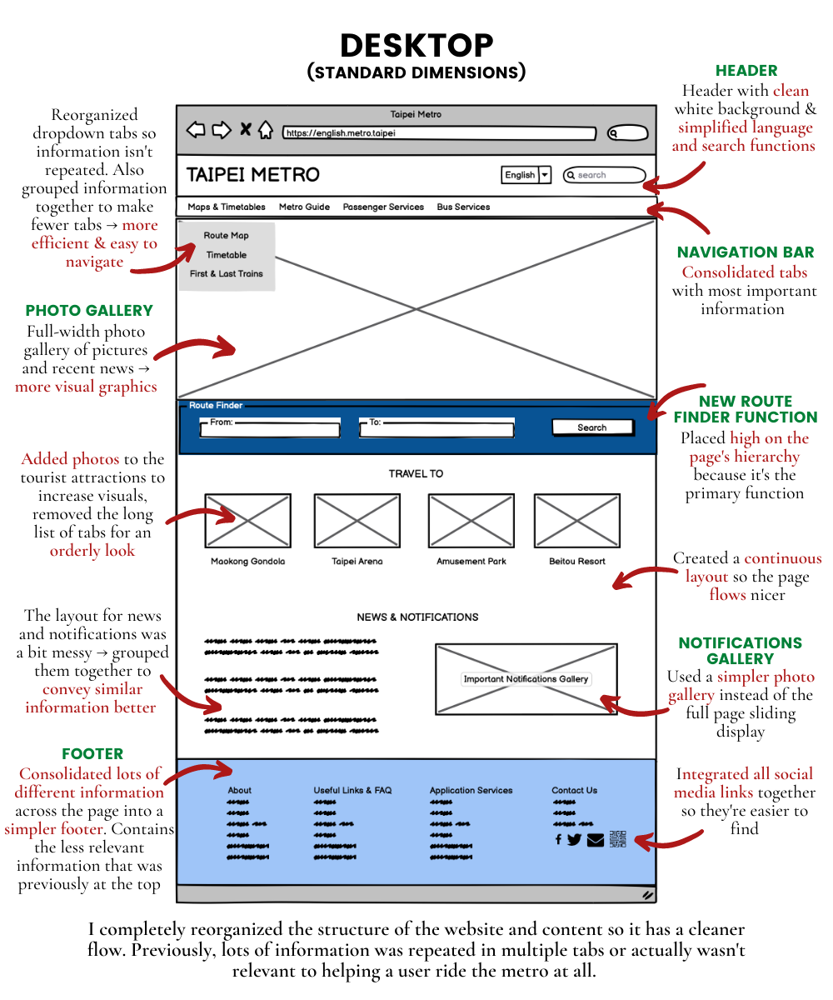
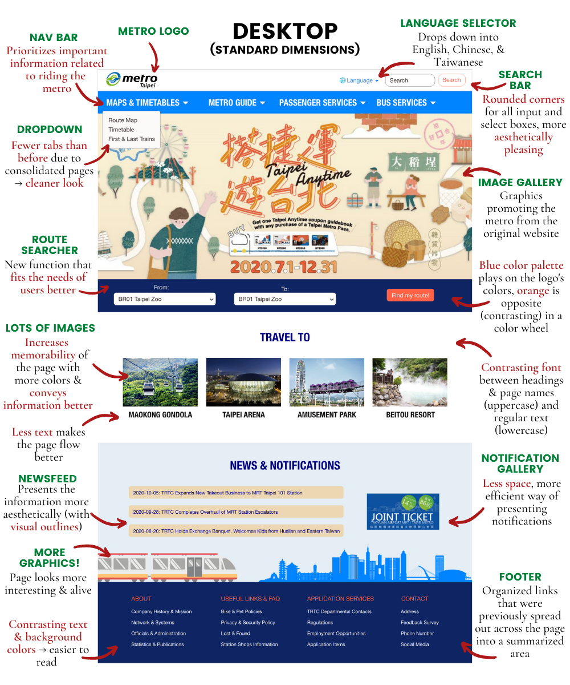

As I've lived in Taipei my whole life, I'm a frequent user of the Taipei Metro System. However, I've always thought that their website was badly designed because I can never navigate the tabs quickly to find the information I need. Here's my attempt at making this home page better! :)
In my opinion, the metro website doesn't have great usability standards. There is a lot of content crammed into the home page, making the page look a bit messy.
I used WAVE to evaluate the website for accessibility purposes:
I used ChromeVox on Chrome for Screen Reading. The screen reader said, "Taipei rapid transit corporation box drawings light horizontal metro service tab". This isn't very clear and can be confusing for people relying on screen readers, as it doesn't talk about the title of the website or what the content entails.
I used Balsamiq to create my lowfi wireframes. Below are the annotated versions:
I used AdobeXD for my highfi prototypes. I focused on colors, typeface hierarchy, and creating a good layout with flex.

I used flex to create most of my layout structures, so it was easy to wrap the elements as the page resized. This successfully worked when I tried the website on all 3 screen sizes in Developer Tools. I also changed the font size of my Mac to the large version, and the website still showed up the same! Coding a responsive website has taught me to consider more nuances in coding, and was super interesting!
I used Canva to create some graphics, and got the rest of the images from the original Metro website.